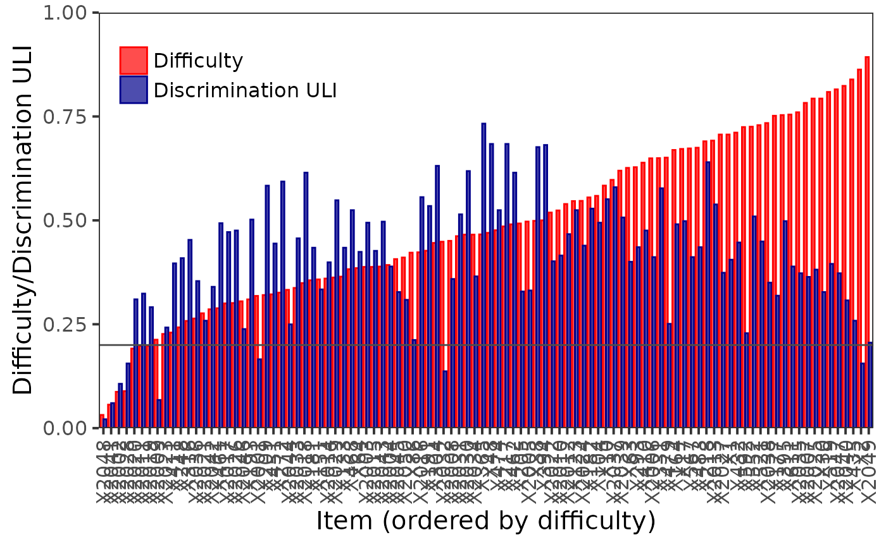

Plots difficulty and (generalized) discrimination or criterion validity for items of the multi-item measurement test using the ggplot2 package. Difficulty and discrimination/validity indices are plotted for each item, items are ordered by their difficulty.
DDplot( Data, item.names, discrim = "ULI", k = 3, l = 1, u = 3, maxscore, minscore, bin = FALSE, cutscore, average.score = FALSE, thr = 0.2, criterion = "none", val_type = "simple", data )
| Data | numeric: binary or ordinal data |
|---|---|
| item.names | character: the names of items. If not specified, the names
of |
| discrim | character: type of discrimination index to be calculated.
Possible values are |
| k | numeric: number of groups to which data may be divided by the total
score to estimate discrimination using |
| l | numeric: lower group. Default value is 1. See Details. |
| u | numeric: upper group. Default value is 3. See Details. |
| maxscore | numeric: maximal scores of items. If single number is provided, the same maximal score is used for all items. If missing, vector of achieved maximal scores is calculated and used in calculations. |
| minscore | numeric: minimal scores of items. If single number is provided, the same maximal score is used for all items. If missing, vector of achieved maximal scores is calculated and used in calculations. |
| bin | logical: should the ordinal data be binarized? Default value is
|
| cutscore | numeric: cut-score used to binarize |
| average.score | logical: should average score of the item be displayed
instead of difficulty? Default value is |
| thr | numeric: value of discrimination threshold. Default value is 0.2.
With |
| criterion | numeric or logical vector: values of criterion. If supplied,
|
| val_type | character: criterion validity measure. Possible values are
|
| data | deprecated. Use argument |
Discrimination is calculated using method specified in
discrim. Default option "ULI" calculates difference in ratio of
correct answers in upper and lower third of students. "RIT" index
calculates correlation between item score and test total score. "RIR"
index calculates correlation between item score and total score for the rest
of the items. With option "none", only difficulty is displayed.
"ULI" index can be generalized using arguments k, l and
u. Generalized ULI discrimination is then computed as follows: The
function takes data on individuals, computes their total test score and then
divides individuals into k groups. The lower and upper group are
determined by l and u parameters, i.e. l-th and u-th group
where the ordering is defined by increasing total score.
For ordinal data, difficulty is defined as relative score (achieved -
minimal)/(maximal - minimal). Minimal score can be specified by
minscore, maximal score can be specified by maxscore. Average
score of items can be displayed with argument average.score = TRUE.
Note that for binary data difficulty estimate is the same as average score of
the item.
Note that all correlations are estimated using Pearson correlation coefficient.
Allen, M. J., & Yen, W. M. (1979). Introduction to measurement theory. Monterey, CA: Brooks/Cole.
Martinkova, P., Stepanek, L., Drabinova, A., Houdek, J., Vejrazka, M., & Stuka, C. (2017). Semi-real-time analyses of item characteristics for medical school admission tests. In: Proceedings of the 2017 Federated Conference on Computer Science and Information Systems.
Adela Hladka
Institute of Computer Science of the Czech Academy of Sciences
hladka@cs.cas.cz
Lubomir Stepanek
Charles University
Jana Vorlickova
Institute of Computer Science of the Czech Academy of Sciences
Patricia Martinkova
Institute of Computer Science of the Czech Academy of Sciences
martinkova@cs.cas.cz
# loading 100-item medical admission test datasets data(dataMedical, dataMedicalgraded) # binary dataset dataBin <- dataMedical[, 1:100] # ordinal dataset dataOrd <- dataMedicalgraded[, 1:100] # DDplot of binary dataset DDplot(dataBin)if (FALSE) { # DDplot of binary dataset without threshold DDplot(dataBin, thr = NULL) # compared to DDplot using ordinal dataset and 'bin = TRUE' DDplot(dataOrd, bin = TRUE) # compared to binarized dataset using bin = TRUE and cut-score equal to 3 DDplot(dataOrd, bin = TRUE, cutscore = 3) # DDplot of binary data using generalized ULI # discrimination based on 5 groups, comparing 4th and 5th # threshold lowered to 0.1 DDplot(dataBin, k = 5, l = 4, u = 5, thr = 0.1) # DDplot of ordinal dataset using ULI DDplot(dataOrd) # DDplot of ordinal dataset using generalized ULI # discrimination based on 5 groups, comparing 4th and 5th # threshold lowered to 0.1 DDplot(dataOrd, k = 5, l = 4, u = 5, thr = 0.1) # DDplot of ordinal dataset using RIT DDplot(dataOrd, discrim = "RIT") # DDplot of ordinal dataset using RIR DDplot(dataOrd, discrim = "RIR") # DDplot of ordinal dataset displaying only difficulty DDplot(dataBin, discrim = "none") # DDplot of ordinal dataset displaying difficulty estimates DDplot(dataOrd) # DDplot of ordinal dataset displaying average item scores DDplot(dataOrd, average.score = TRUE) # item difficulty / criterion validity plot for data with criterion data(GMAT, package = "difNLR") DDplot(GMAT[, 1:20], criterion = GMAT$criterion, val_type = "simple") }